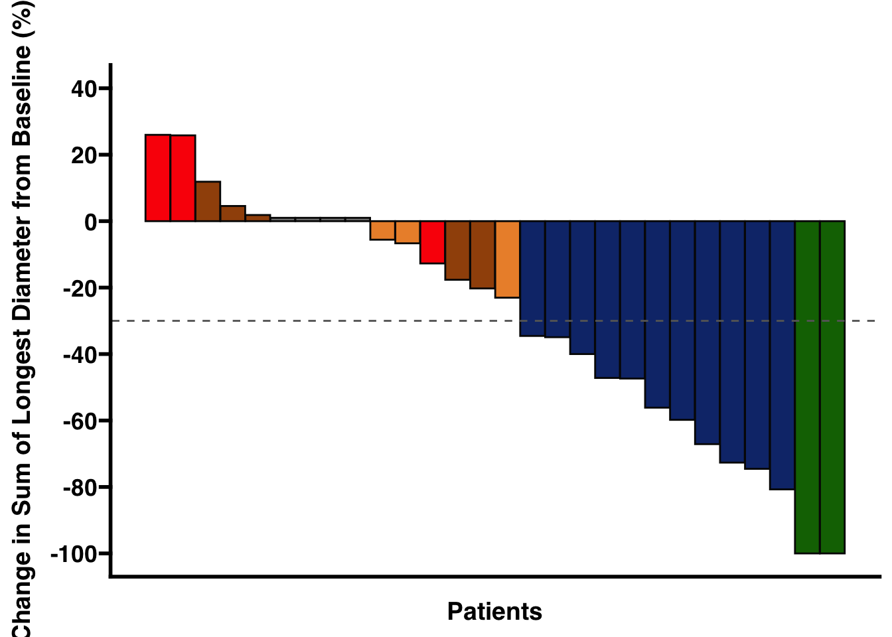

Last updated: 2023-04-26
Checks: 7 0
Knit directory: LUPER/
This reproducible R Markdown analysis was created with workflowr (version 1.7.0). The Checks tab describes the reproducibility checks that were applied when the results were created. The Past versions tab lists the development history.
Great! Since the R Markdown file has been committed to the Git repository, you know the exact version of the code that produced these results.
Great job! The global environment was empty. Objects defined in the global environment can affect the analysis in your R Markdown file in unknown ways. For reproduciblity it’s best to always run the code in an empty environment.
The command set.seed(20230419) was run prior to running
the code in the R Markdown file. Setting a seed ensures that any results
that rely on randomness, e.g. subsampling or permutations, are
reproducible.
Great job! Recording the operating system, R version, and package versions is critical for reproducibility.
Nice! There were no cached chunks for this analysis, so you can be confident that you successfully produced the results during this run.
Great job! Using relative paths to the files within your workflowr project makes it easier to run your code on other machines.
Great! You are using Git for version control. Tracking code development and connecting the code version to the results is critical for reproducibility.
The results in this page were generated with repository version 73507ad. See the Past versions tab to see a history of the changes made to the R Markdown and HTML files.
Note that you need to be careful to ensure that all relevant files for
the analysis have been committed to Git prior to generating the results
(you can use wflow_publish or
wflow_git_commit). workflowr only checks the R Markdown
file, but you know if there are other scripts or data files that it
depends on. Below is the status of the Git repository when the results
were generated:
Ignored files:
Ignored: .DS_Store
Ignored: .Rhistory
Ignored: .Rproj.user/
Ignored: analysis/.DS_Store
Ignored: data/LUPER_Adverse Events_2023_04_19.xlsx
Ignored: data/LUPER_Concomitant Medication_2023_04_19.xlsx
Ignored: data/LUPER_Cycles_2023_04_19.xlsx
Ignored: data/LUPER_End of Study_2023_04_19.xlsx
Ignored: data/LUPER_EoT - Safety FUP_2023_04_19.xlsx
Ignored: data/LUPER_Follow Up_2023_04_19.xlsx
Ignored: data/LUPER_ICF Screening_2023_04_19.xlsx
Ignored: data/LUPER_Laboratory_tests_2023_04_19.xlsx
Ignored: data/LUPER_Pharmacogenomics_2023_04_19.xlsx
Ignored: data/LUPER_Post-study Treatment_2023_04_19.xlsx
Ignored: data/LUPER_Tumor Assessment_2023_04_19.xlsx
Ignored: data/LUPER_Unscheduled visits_2023_04_19.xlsx
Ignored: data/LUPER_report_Tumor_Assessment_2023_04_19.xlsx
Untracked files:
Untracked: analysis/output/
Untracked: output/LUPER_ORR_RECIST_2023-04-19.xlsx
Untracked: output/LUPER_ORR_waterfall_2023-04-19.png
Untracked: output/LUPER_waterfall_ORR_RECIST_2023-04-19.xlsx
Untracked: output/swimmer-spider-plot/
Unstaged changes:
Modified: .gitignore
Modified: README.md
Note that any generated files, e.g. HTML, png, CSS, etc., are not included in this status report because it is ok for generated content to have uncommitted changes.
These are the previous versions of the repository in which changes were
made to the R Markdown
(analysis/WP1_QA_tumor-assessments_2023-04-19.Rmd) and HTML
(docs/WP1_QA_tumor-assessments_2023-04-19.html) files. If
you’ve configured a remote Git repository (see
?wflow_git_remote), click on the hyperlinks in the table
below to view the files as they were in that past version.
| File | Version | Author | Date | Message |
|---|---|---|---|---|
| Rmd | 73507ad | MedsirScientific | 2023-04-26 | wflow_publish("analysis/WP1_QA_tumor-assessments_2023-04-19.Rmd") |
This report presents the cleaning of tumour assessment data from the LUPER study. The ultimate goal is to obtain the number of patients who have experienced radiologically confirmed disease progression. However, the purpose of this preliminary analysis of radiological progressions is to detect anomalies or discrepancies in the tumour assessment data collected.
Raw data from the eCRF was downloaded as of 2023-04-19 to perform these analyses.
First, we will obtain a list with the identifying codes of the patients included in the Intention-to-Treat (ITT) population.
We will use the medication intake sheet (Cycles) to obtain the list of patients included in the ITT:
data_00_patient_ids <- read_excel(
here("data/LUPER_Cycles_2023_04_19.xlsx"),
sheet = "Cycles",
skip = 1) %>%
clean_names() %>%
# Extract data only from patients who took the study medication on C1D1.
filter(
event_num == 1,
pembrolizumab_administered == "Yes"
) %>%
select(patient)
rmarkdown::paged_table(data_00_patient_ids)Data from tumour assessments need to be pulled from two different sources. On the one hand, we have the baseline tumour assessment included in the Screening sheet. On the other hand, we have the tumour assessment sheet itself, which collects all post-baseline assessments.
In addition, not all patients had measurable lesions at baseline. Therefore, we need to collect data for both types of lesions. First, we extracted data from patients with measurable lesions at baseline:
data_01a_baseline_target <- read_excel(
here("data/LUPER_ICF Screening_2023_04_19.xlsx"),
sheet = "TARGET",
skip = 1) %>%
clean_names() %>%
# The variable "event_num" encodes the tumour assessment number in the post-baseline assessments.
# Create this variable and assign a 0 to mark this as the baseline assessment.
mutate(
event_num = 0
) %>%
group_by(patient, event_num) %>%
# We collect the length of the longest diameter of each reported target (i.e., measurable) lesion individually.
# Calculate the sum of longest diameter of all lesions.
mutate(
sum_of_lesions = sum(longest_diameter_short_axis_mm)
) %>%
# Since we now have the sum of longest diameters repeated as many times as there are measurable lesions, we can keep either any row
group_by(patient) %>%
filter(row_number() == 1) %>%
mutate(
evaluation_date = dmy(evaluation_date)
) %>%
# Create a dummy variable to code that the patient had measurable disease at baseline.
mutate(
baseline_target = 0
) %>%
select(
patient, event_num, baseline_target, evaluation_date, longest_diameter_short_axis_mm, sum_of_lesions
)
data_01a_baseline_target <- merge(
data_00_patient_ids,
data_01a_baseline_target,
by = "patient",
all = FALSE
)
rmarkdown::paged_table(data_01a_baseline_target)We then extract data from patients who had non-measurable lesions at baseline:
data_01b_baseline_nontarget <- read_excel(
here("data/LUPER_ICF Screening_2023_04_19.xlsx"),
sheet = "NON_TARGET",
skip = 1) %>%
clean_names() %>%
# The variable "event_num" encodes the tumour assessment number in the post-baseline assessments.
# Create this variable and assign a 0 to mark this as the baseline assessment.
mutate(
event_num = 0
) %>%
# Since we only care about the number of patients with non-measurable disease at baseline, we can keep either any row
group_by(patient) %>%
filter(row_number() == 1) %>%
mutate(
evaluation_date = dmy(evaluation_date)
) %>%
filter(
non_target_lesion == "Yes"
) %>%
select(
patient, event_num, evaluation_date
)
data_01b_baseline_nontarget <- merge(
data_00_patient_ids,
data_01b_baseline_nontarget,
by = "patient",
all = FALSE
)
rmarkdown::paged_table(data_01b_baseline_nontarget)Finally, we merge both datasets to generate a single list that states for each patient whether they had measurable lesions or non-measurable lesions only at baseline:
data_01_baseline_all <- full_join(
data_01a_baseline_target,
data_01b_baseline_nontarget,
by = c("patient", "event_num")
) %>%
# If a patient had measurable lesions at baseline, we want to keep that data.
# Only if there were no measurable lesions, we want to keep the tumour assessment date when the non-measurable lesions were detected.
mutate(
evaluation_date = if_else(
is.na(evaluation_date.x), evaluation_date.y, evaluation_date.x
)
) %>%
# The following mutate() function creates a "baseline_nontarget" variable that codes 0 if the patient had no measurable lesions at baseline.
mutate(
baseline_nontarget = if_else(is.na(baseline_target) == 0, 1, 0),
baseline_nontarget = na_if(baseline_nontarget, 1)
) %>%
select(
patient, event_num, evaluation_date, baseline_target, sum_of_lesions, baseline_nontarget
)
rmarkdown::paged_table(data_01_baseline_all)Next, we extract the results of the post-baseline tumour assessments:
data_02a_postbaseline_target <- read_excel(
here("data/LUPER_Tumor Assessment_2023_04_19.xlsx"),
sheet = "TARGET",
skip = 1) %>%
clean_names() %>%
# We collect the length of the longest diameter of each reported target (i.e., measurable) lesion individually.
# Calculate the sum of longest diameter of all lesions for each tumour assessment.
group_by(patient, event_num) %>%
mutate(
sum_of_lesions = sum(longest_diameter_short_axis_mm)
) %>%
# Since we now have the sum of longest diameters repeated as many times as there are measurable lesions, we can keep either any row
group_by(patient, event_num) %>%
filter(row_number() == 1) %>%
mutate(
evaluation_date = dmy(evaluation_date)
) %>%
select(
patient, event_num, evaluation_date, sum_of_lesions
)
rmarkdown::paged_table(data_02a_postbaseline_target)data_02b_postbaseline_nontarget <- read_excel(
here("data/LUPER_Tumor Assessment_2023_04_19.xlsx"),
sheet = "NON_TARGET",
skip = 1) %>%
clean_names() %>%
# Since we now have the sum of longest diameters repeated as many times as there are measurable lesions, we can keep either any row
group_by(patient, event_num) %>%
filter(row_number() == 1) %>%
mutate(
evaluation_date = dmy(evaluation_date)
) %>%
select(
patient, event_num, evaluation_date
)
rmarkdown::paged_table(data_02b_postbaseline_nontarget)data_02_postbaseline <- merge(
data_02a_postbaseline_target,
data_02b_postbaseline_nontarget,
by = c("patient", "event_num", "evaluation_date"),
all = TRUE
)
rmarkdown::paged_table(data_02_postbaseline)For a complete account of the data, we need to extract also the occurrence of new lesions from another sheet of the file with the post-baseline tumour assessments:
data_03_new_lesions <- read_excel(
here("data/LUPER_Tumor Assessment_2023_04_19.xlsx"),
sheet = "NEW_LESIONS",
skip = 1) %>%
clean_names() %>%
# Create a new variable that encodes whether the patient had a new lesion at any tumour assessment
mutate(
new_lesions = "Yes"
) %>%
mutate(
evaluation_date = dmy(evaluation_date)
) %>%
# Since the presentation of a single new lesion already implies disease progression, we only keep the record of one new lesion, regardless of which one.
group_by(patient) %>%
filter(row_number() == 1) %>%
select(
patient, event_num, evaluation_date, new_lesions
)
rmarkdown::paged_table(data_03_new_lesions)We want to incorporate the overall response according to RECIST v.1.1 in each tumour assessment into the final dataset:
data_04a_recist <- read_excel(
here("data/LUPER_Tumor Assessment_2023_04_19.xlsx"),
sheet = "Tumor Assessment",
skip = 1) %>%
clean_names() %>%
select(
patient, event_num, target_lesions_response, non_target_lesions_response, overall_response
)
rmarkdown::paged_table(data_04a_recist)Since the study treatment includes immunotherapy, we also need to take into account the assessment by (immune) iRECIST:
data_04b_irecist <- read_excel(
here("data/LUPER_Tumor Assessment_2023_04_19.xlsx"),
sheet = "Tumor Assessment",
skip = 1) %>%
clean_names() %>%
select(
patient, event_num, target_lesions_response, non_target_lesions_response, overall_response,
is_the_patient_clinically_stable_and_will_benefit_from_continued_treatment, i_target_lesions_response,
i_non_target_lesions_response, i_overall_response, does_the_patient_continue_to_be_clinically_stable
)
rmarkdown::paged_table(data_04b_irecist)We construct the analysis dataset to assess the quality of the data from the tumour assessments and the overall response assessment using RECIST v.1.1:
data_05_or_recist <- merge(
data_01_baseline_all,
data_02_postbaseline,
by = c("patient", "event_num", "evaluation_date","sum_of_lesions"),
all = TRUE
) %>%
# We create a new variable with the sum of lesion diameters at baseline to later calculate the change from baseline.
group_by(patient) %>%
mutate(
baseline_sld = sum_of_lesions[event_num == 0]
) %>%
mutate(
change_from_baseline = sum_of_lesions - baseline_sld
) %>%
mutate(
percent_change_from_baseline = ((sum_of_lesions - baseline_sld) / baseline_sld) * 100
) %>%
# For coding disease progression, RECIST sets the criterion of an increase of at least 20% with respect to the smallest sum of lesion diameters (nadir).
group_by(patient) %>%
mutate(
nadir = ifelse(event_num == 0, sum_of_lesions, pmin(sum_of_lesions, lag(sum_of_lesions)))
) %>%
mutate(
change_from_nadir = sum_of_lesions - nadir
) %>%
mutate(
percent_change_from_nadir = ((sum_of_lesions - nadir) / nadir) * 100
)
data_05_or_recist <- merge(
data_05_or_recist,
data_03_new_lesions,
by = c("patient", "event_num", "evaluation_date"),
all = TRUE
) %>%
mutate(
new_lesions = if_else(
is.na(new_lesions), "No", new_lesions
)
)
data_05_or_recist <- merge(
data_05_or_recist,
data_04a_recist,
by = c("patient", "event_num"),
all = TRUE
) %>%
filter(
!is.na(evaluation_date)
) %>%
mutate(
overall_response = if_else(
overall_response == "Progressive Disease (PD)", "PD", overall_response),
overall_response = if_else(
overall_response == "Complete Response (CR)", "CR", overall_response),
overall_response = if_else(
overall_response == "Partial Response (PR)", "PR", overall_response),
overall_response = if_else(
overall_response == "Stable Disease (SD)", "SD", overall_response),
overall_response = if_else(
overall_response == "Non-CR/Non-PD", "Non-CR/Non-PD", overall_response),
PD = if_else(overall_response == "PD", 1, 0),
CR = if_else(overall_response == "CR", 1, 0),
PR = if_else(overall_response == "PR", 1, 0),
SD = if_else(overall_response == "SD", 1, 0),
NN = if_else(overall_response == "Non-CR/Non-PD", 1, 0),
pd_this_ta = case_when(PD == 1 ~ event_num),
cr_this_ta = case_when(CR == 1 ~ event_num),
pr_this_ta = case_when(PR == 1 ~ event_num),
sd_this_ta = case_when(SD == 1 ~ event_num),
nn_this_ta = case_when(NN == 1 ~ event_num),
site = substr(patient, 1, 4)
)
data_05_or_recist <- merge(
data_00_patient_ids,
data_05_or_recist,
by = "patient",
all = FALSE
)
# Quick fix
# data_05_or_recist <- data_05_or_recist[!(data_05_or_recist$patient == '0103-008' & is.na(data_05_or_recist$sum_of_lesions)), ]
data_05_or_recist <- data_05_or_recist[!(data_05_or_recist$patient == '0103-008' & is.na(data_05_or_recist$sum_of_lesions) & data_05_or_recist$event_num != 4), ]
write_xlsx(
data_05_or_recist,
here("output/LUPER_ORR_RECIST_2023-04-19.xlsx")
)
rmarkdown::paged_table(data_05_or_recist)Finally, we generated for each site a graphical representation of the tumour assessments of each patient with their overall response coded according to RECIST v.1.1, as well as the percentage change in the sum of lesion diameters with respect to baseline:
cols <- c(
"CR" = "#153D99",
"PR" = "#74AAFF",
"SD" = "#FFD966",
"Non-CR/Non-PD" = "#9ACEB7",
"PD" = "#B24745"
)
shape_override <- c(23, 19, 15, 15, 4)
stroke_override <- c(1, 1, 1, .9, 1)
size_override <- c(2, 2, 2, 2, 2)
swimmer_spider_plot <- function(site, comment, name) {
swimmer_ta <- data_05_or_recist %>%
filter(
site == {{site}}
) %>%
ggplot(
aes(y = patient, group = patient)) +
theme_bw() +
theme(
panel.grid.minor.x = element_blank(),
panel.border = element_blank()
) +
# 1 data layer: line plot showing number of TAs
geom_line(aes(x = event_num), size = 1.5) +
# 2 data layer: dot plot showing whether each patient had measurable disease at baseline
geom_point(aes(x = baseline_target,
col = "Measurable disease"),
size = 3.5,
stroke = 0.75,
shape = 13) +
# 3 data layer: dot plot showing whether each patient had only non-measurable disease at baseline
geom_point(aes(x = baseline_nontarget,
col = "Non-measurable disease"),
size = 3.5,
stroke = 0.75,
shape = 1) +
# 4 data layer: dot plot showing TAs with an OR = SD
geom_point(aes(x = sd_this_ta,
col = "SD"),
stroke = 2,
shape = 15) +
# 5 data layer: dot plot showing TAs with an OR = PR
geom_point(aes(x = pr_this_ta,
col = "PR"),
size = 2,
stroke = 1.5,
shape = 19,
fill = "#74AAFF") +
# 6 data layer: dot plot showing TAs with an OR = CR
geom_point(aes(x = cr_this_ta,
col = "CR"),
size = 2,
stroke = 1.5,
shape = 23,
fill = "#153D99") +
# 7 data layer: dot plot showing TAs with an OR = PD
geom_point(aes(x = pd_this_ta,
col = "PD"),
size = 2,
stroke = 1.5,
shape = 4) +
# 8 data layer: dot plot showing TAs with an OR = Non-CR/Non-PD
geom_point(aes(x = nn_this_ta,
col = "Non-CR/Non-PD"),
stroke = 2,
shape = 15) +
# Final aesthetics adjustments
scale_color_manual(values = cols,
limits = c('CR', 'PR', 'SD', 'Non-CR/Non-PD', 'PD'),
name = "Overall Response") +
scale_x_continuous(breaks = seq(1, 16, 1)) +
guides(color = guide_legend(
override.aes = list(
shape = shape_override,
stroke = stroke_override,
size = size_override
)
)) +
labs(
x = "Tumor assessment",
y = "Patient"
)
ggsave(
paste("output/swimmer-spider-plot/materials/LUPER_site-", as.character({{site}}), "_swimmer_TAs_2023-04-19.png", sep = ""),
swimmer_ta,
width = 24,
height = 120,
units = "cm",
dpi = 300
)
spider_ta <- data_05_or_recist %>%
filter(
site == {{site}}
) %>%
ggplot(
aes(x = event_num, y = percent_change_from_baseline)
) +
# Line plot showing SDL percent change from baseline
geom_line(aes(color = patient), size = 1.2) +
scale_color_manual(values = c(
rep("#000000", 200))
) +
# Second data layer: dot plot showing TAs with an OR = SD
geom_point(aes(x = sd_this_ta,
col = "SD"),
stroke = 1.5,
shape = 22,
colour = "#FFD966",
fill = "#FFD966") +
# Third data layer: dot plot showing TAs with an OR = PR
geom_point(aes(x = pr_this_ta,
col = "PR"),
size = 2,
stroke = 1.5,
shape = 21,
colour = "#74AAFF",
fill = "#74AAFF") +
# Fourth data layer: dot plot showing TAs with an OR = CR
geom_point(aes(x = cr_this_ta,
col = "CR"),
size = 2,
stroke = 1.5,
shape = 23,
colour = "#153D99",
fill = "#153D99") +
# Fifth data layer: dot plot showing TAs with an OR = PD
geom_point(aes(x = pd_this_ta,
col = "PD"),
size = 2,
stroke = 1.5,
shape = 4,
colour = "#B24745") +
# Final aesthetics adjustments
scale_fill_manual(values = cols,
name = "Overall Response") +
theme_minimal() +
theme(
panel.border = element_blank(),
panel.grid.minor.y = element_blank(),
panel.grid.minor.x = element_blank(),
panel.background = element_rect(fill = "#FFFFFF", colour = "#FFFFFF"),
plot.background = element_rect(fill = "#FFFFFF", colour = "#FFFFFF"),
legend.title = element_text(size = 5),
legend.text = element_text(size = 5),
legend.justification = "top",
legend.position = c(0.95, 0.95),
legend.direction = "vertical"
) +
labs(
x = "Tumor assessment",
y = "Change in sum of lesions from baseline (%)",
shape = "Overall response"
) +
guides(size = "none",
color = "none"
) +
scale_x_continuous(breaks = seq(1, 9, 1)) +
scale_y_continuous(breaks = seq(-100, 100 , 20))
spider_ta <- spider_ta + scale_shape(na.translate = FALSE)
ggsave(
paste("output/swimmer-spider-plot/materials/LUPER_site-", as.character({{site}}), "_spider_TAs_2023-04-19.png", sep = ""),
spider_ta,
width = 30,
height = 12,
units = "cm",
dpi = 300
)
spider_ta <- spider_ta +
annotate("rect", xmin = 0, xmax = 9, ymin = -30, ymax = -100,
alpha = .1,fill = "#74AAFF") +
annotate("rect", xmin = 0, xmax = 9, ymin = 20, ymax = 100,
alpha = .0, fill = "#B24745")
combined_ta <- plot_grid(
swimmer_ta,
spider_ta,
nrow = 1,
rel_heights = c(1, 1)
)
title <- ggdraw() +
draw_label({{name}},
fontface = 'bold',
x = 0,
hjust = 0
) +
theme(
plot.margin = margin(0, 0, 0, 7)
)
combined_ta <- plot_grid(
title, combined_ta,
ncol = 1,
rel_heights = c(0.1, 1)
)
combined_ta <- add_sub(
combined_ta, " Reason for study treatment discontinuation:",
x = 0, hjust = 0,
fontface = 'bold',
size = 8
)
combined_ta <- add_sub(
combined_ta, {{comment}},
x = 0, hjust = 0,
fontface = 'plain',
size = 8
)
ggsave(
paste("output/swimmer-spider-plot/LUPER_site-", as.character({{site}}), "_TAs_2023-04-19.png", sep = ""),
combined_ta,
width = 30,
height = 15,
units = "cm",
dpi = 300
)
}site_0101_name <- "Site 0101 - Hospital Universitario Gregorio Marañón"
comment_site_0101 <- " Patient 0101-001 had new lesions in the hiliar and lower paratrachealhiliar lymph nodes.\n Patient 0101-003 is responding after 30 cycles of study treatment.\n Patient 0101-004 only had a measurable lesion in the axillary lymph node at baseline and responded until the appearance of new lesions in the hilar lung lymph nodes.\n Patient 0101-006 died (disease progression) before a post-baseline tumour assessment was performed.\n Patient 0101-008 had a 91.4% increase in sum of lesion diameters from nadir that was confirmed 4 weeks later (iCPD) by iRECIST.\n Patient 0101-009 had new lesions in the brain and lung.\n Patient 0101-012 is responding after 9 cycles of study treatment.\n Patient 0101-013 is responding after 9 cycles of study treatment.\n Patient 0101-014 is responding after 9 cycles of study treatment.\n Patient 0101-015 is responding after 4 cycles of study treatment."
swimmer_spider_plot("0101", comment_site_0101, site_0101_name)Warning: Using `size` aesthetic for lines was deprecated in ggplot2 3.4.0.
ℹ Please use `linewidth` instead.Warning: Removed 49 rows containing missing values (`geom_point()`).Warning: Removed 59 rows containing missing values (`geom_point()`).Warning: Removed 55 rows containing missing values (`geom_point()`).Warning: Removed 30 rows containing missing values (`geom_point()`).Warning: Removed 51 rows containing missing values (`geom_point()`).Warning: Removed 55 rows containing missing values (`geom_point()`).Warning: Removed 59 rows containing missing values (`geom_point()`).Warning: Removed 55 rows containing missing values (`geom_point()`).Warning: Removed 30 rows containing missing values (`geom_point()`).Warning: Removed 51 rows containing missing values (`geom_point()`).Warning: Removed 55 rows containing missing values (`geom_point()`).Warning: Removed 49 rows containing missing values (`geom_point()`).Warning: Removed 59 rows containing missing values (`geom_point()`).Warning: Removed 55 rows containing missing values (`geom_point()`).Warning: Removed 30 rows containing missing values (`geom_point()`).Warning: Removed 51 rows containing missing values (`geom_point()`).Warning: Removed 55 rows containing missing values (`geom_point()`).Warning: Removed 59 rows containing missing values (`geom_point()`).Warning: Removed 55 rows containing missing values (`geom_point()`).Warning: Removed 30 rows containing missing values (`geom_point()`).Warning: Removed 51 rows containing missing values (`geom_point()`).Warning: Removed 55 rows containing missing values (`geom_point()`).site_0102_name <- "Site 0102 - Hospital Universitario Sanchinarro-START-CIOCC"
comment_site_0102 <- " Patient 0102-001 died (COVID-19) before a post-baseline tumour assessment was performed.\n Patient 0102-002 experiencied a pseudoprogression at TA #2 due to unequivocal progression of non-target lesions in the liver that was later evaluated as iSD (TA #3) and iPR (TAs #4 & #5) by iRECIST.\n Patient 0102-003 had a suspected disease progression at TA #7 but the confirmation TA 4 weeks later was indeterminate. Later on, TA #9 shows iSD and TA #10 shows iCPD by iRECIST.\n Patient 0102-004 is responding after 21 cycles of study treatment."
swimmer_spider_plot("0102", comment_site_0102, site_0102_name)Warning: Removed 25 rows containing missing values (`geom_point()`).Warning: Removed 29 rows containing missing values (`geom_point()`).Warning: Removed 22 rows containing missing values (`geom_point()`).Warning: Removed 27 rows containing missing values (`geom_point()`).Warning: Removed 21 rows containing missing values (`geom_point()`).Warning: Removed 27 rows containing missing values (`geom_point()`).Warning: Removed 29 rows containing missing values (`geom_point()`).Warning: Removed 22 rows containing missing values (`geom_point()`).Warning: Removed 27 rows containing missing values (`geom_point()`).Warning: Removed 21 rows containing missing values (`geom_point()`).Warning: Removed 27 rows containing missing values (`geom_point()`).Warning: Removed 25 rows containing missing values (`geom_point()`).Warning: Removed 29 rows containing missing values (`geom_point()`).Warning: Removed 22 rows containing missing values (`geom_point()`).Warning: Removed 27 rows containing missing values (`geom_point()`).Warning: Removed 21 rows containing missing values (`geom_point()`).Warning: Removed 27 rows containing missing values (`geom_point()`).Warning: Removed 29 rows containing missing values (`geom_point()`).Warning: Removed 22 rows containing missing values (`geom_point()`).Warning: Removed 27 rows containing missing values (`geom_point()`).Warning: Removed 21 rows containing missing values (`geom_point()`).Warning: Removed 27 rows containing missing values (`geom_point()`).site_0103_name <- "Site 0103 - Hospital Fundación Jiménez Díaz-START Madrid"
comment_site_0103 <- " Patient 0103-001 had a 25.8% increase in sum of lesion diameters from nadir that was confirmed 4 weeks later (iCPD) by iRECIST.\n Patient 0103-002 had new lesions at the subcarinal lymph nodes. The overall response at TA #8 is recorded as PR despite a 15.1% increase in sum of lesion diameters from nadir.\n Patient 0103-003 had a 60.4% increase in sum of lesion diameters from nadir that was confirmed 4 weeks later (iCPD) by iRECIST.\n Patient 0103-004 had a 46.7% increase in sum of lesion diameters from nadir that has not been confirmed 4 weeks later as per iRECIST (TA #5 shows iUPD at the same evaluation date of TA #4).\n Patient 0103-006 died (disease progression) before a post-baseline tumour assessment was performed.\n Patient 0103-008 was stable until unequivocal progression of non-target lesions in the brain."
swimmer_spider_plot("0103", comment_site_0103, site_0103_name)Warning: Removed 25 rows containing missing values (`geom_point()`).Warning: Removed 31 rows containing missing values (`geom_point()`).Warning: Removed 17 rows containing missing values (`geom_point()`).Warning: Removed 29 rows containing missing values (`geom_point()`).Warning: Removed 31 rows containing missing values (`geom_point()`).Warning: Removed 26 rows containing missing values (`geom_point()`).Warning: Removed 31 rows containing missing values (`geom_point()`).Warning: Removed 2 rows containing missing values (`geom_line()`).Warning: Removed 19 rows containing missing values (`geom_point()`).Warning: Removed 29 rows containing missing values (`geom_point()`).Warning: Removed 31 rows containing missing values (`geom_point()`).Warning: Removed 27 rows containing missing values (`geom_point()`).Warning: Removed 25 rows containing missing values (`geom_point()`).Warning: Removed 31 rows containing missing values (`geom_point()`).Warning: Removed 17 rows containing missing values (`geom_point()`).Warning: Removed 29 rows containing missing values (`geom_point()`).Warning: Removed 31 rows containing missing values (`geom_point()`).Warning: Removed 26 rows containing missing values (`geom_point()`).Warning: Removed 31 rows containing missing values (`geom_point()`).Warning: Removed 2 rows containing missing values (`geom_line()`).Warning: Removed 19 rows containing missing values (`geom_point()`).Warning: Removed 29 rows containing missing values (`geom_point()`).Warning: Removed 31 rows containing missing values (`geom_point()`).Warning: Removed 27 rows containing missing values (`geom_point()`).site_0104_name <- "Site 0104 - Hospital Universitari Vall D'Hebron"
comment_site_0104 <- " Patient 0104-002 is responding after 7 cycles of study treatment.\n Patient 0104-003 had new lesions in the brain.\n Patient 0104-004 died (pseudomonal sepsis) before a post-baseline tumour assessment was performed.\n Patient 0104-006 is responding after 3 cycles of study treatment.\n Patient 0104-007 is stable after 2 cycles of study treatment."
swimmer_spider_plot("0104", comment_site_0104, site_0104_name)Warning: Removed 8 rows containing missing values (`geom_point()`).Warning: Removed 13 rows containing missing values (`geom_point()`).Warning: Removed 10 rows containing missing values (`geom_point()`).Warning: Removed 9 rows containing missing values (`geom_point()`).Warning: Removed 13 rows containing missing values (`geom_point()`).Warning: Removed 12 rows containing missing values (`geom_point()`).Warning: Removed 13 rows containing missing values (`geom_point()`).Warning: Removed 10 rows containing missing values (`geom_point()`).Warning: Removed 9 rows containing missing values (`geom_point()`).Warning: Removed 13 rows containing missing values (`geom_point()`).Warning: Removed 12 rows containing missing values (`geom_point()`).Warning: Removed 8 rows containing missing values (`geom_point()`).Warning: Removed 13 rows containing missing values (`geom_point()`).Warning: Removed 10 rows containing missing values (`geom_point()`).Warning: Removed 9 rows containing missing values (`geom_point()`).Warning: Removed 13 rows containing missing values (`geom_point()`).Warning: Removed 12 rows containing missing values (`geom_point()`).Warning: Removed 13 rows containing missing values (`geom_point()`).Warning: Removed 10 rows containing missing values (`geom_point()`).Warning: Removed 9 rows containing missing values (`geom_point()`).Warning: Removed 13 rows containing missing values (`geom_point()`).Warning: Removed 12 rows containing missing values (`geom_point()`).site_0109_name <- "Site 0109 - Institut Català d' Oncologia L'Hospitalet (ICO)"
comment_site_0109 <- " Patient 0109-001 had a new lesion in the liver.\n Patient 0109-004 is responding after 7 cycles of study treatment.\n Patient 0109-005 is responding after 2 cycles of study treatment."
swimmer_spider_plot("0109", comment_site_0109, site_0109_name)Warning: Removed 8 rows containing missing values (`geom_point()`).Warning: Removed 11 rows containing missing values (`geom_point()`).Warning: Removed 10 rows containing missing values (`geom_point()`).Warning: Removed 7 rows containing missing values (`geom_point()`).Warning: Removed 11 rows containing missing values (`geom_point()`).Warning: Removed 10 rows containing missing values (`geom_point()`).Warning: Removed 11 rows containing missing values (`geom_point()`).Warning: Removed 10 rows containing missing values (`geom_point()`).Warning: Removed 7 rows containing missing values (`geom_point()`).Warning: Removed 11 rows containing missing values (`geom_point()`).Warning: Removed 10 rows containing missing values (`geom_point()`).Warning: Removed 8 rows containing missing values (`geom_point()`).Warning: Removed 11 rows containing missing values (`geom_point()`).Warning: Removed 10 rows containing missing values (`geom_point()`).Warning: Removed 7 rows containing missing values (`geom_point()`).Warning: Removed 11 rows containing missing values (`geom_point()`).Warning: Removed 10 rows containing missing values (`geom_point()`).Warning: Removed 11 rows containing missing values (`geom_point()`).Warning: Removed 10 rows containing missing values (`geom_point()`).Warning: Removed 7 rows containing missing values (`geom_point()`).Warning: Removed 11 rows containing missing values (`geom_point()`).Warning: Removed 10 rows containing missing values (`geom_point()`).We’re testing a new treatment on 30 patients to see if it works. We’ll either see 10% or fewer patients respond (null hypothesis) or 30% or more respond (alternative hypothesis).
We’ll use a standardized test assuming the null hypothesis is true, with a type I error rate of 0.025 and a type II error rate of around 0.1 (0.866), giving us 90% statistical power.
If at least 7 patients respond to the treatment, we’ll reject the null hypothesis and conclude that the treatment works better than chance.
library("survival")
library("survminer")Loading required package: ggpubr
Attaching package: 'ggpubr'The following object is masked from 'package:cowplot':
get_legend
Attaching package: 'survminer'The following object is masked from 'package:survival':
myelomalibrary("survMisc")
Attaching package: 'survMisc'The following object is masked from 'package:ggplot2':
autoplotlibrary("ggprism")
### Load data -----------------------------------------------------------------
data_06_orr <- read_excel(
here("output/LUPER_waterfall_ORR_RECIST_2023-04-19.xlsx")
)
### Filter by dise level group ------------------------------------------------
data06a_orr_dl1 <- data_06_orr %>%
filter(
Cohort == "Dose level 1"
)
data06b_orr_dl2 <- data_06_orr %>%
filter(
Cohort == "Dose level 2"
)
### Plot ----------------------------------------------------------------------
waterfallplot_orr <- ggplot(
data_06_orr,
aes(
x = Order,
y = SLD_CfB,
colour = factor(Colour)
)
) +
coord_cartesian(
ylim = c(-100, 40)
) +
scale_y_continuous(
breaks = seq(-100, 40, by = 20
)
) +
geom_bar(
fill = data_06_orr$Colour,
colour = "#060606",
stat = "identity",
width = 0.99
) +
geom_abline(slope = 0, intercept = -30, col = "gray40", lty = 2) +
theme_prism() +
labs(title = "",
x = "Patients",
y = "Change in Sum of Longest Diameter from Baseline (%)") +
theme(
axis.text.x = element_blank(),
axis.ticks.x = element_blank()
)
### Save plot -----------------------------------------------------------------
ggsave(
here("output/LUPER_ORR_waterfall_2023-04-19.png"),
waterfallplot_orr,
width = 24,
height = 16,
units = "cm",
dpi = 300
)
### Show plot -----------------------------------------------------------------
waterfallplot_orr
sessionInfo()R version 4.1.3 (2022-03-10)
Platform: x86_64-apple-darwin17.0 (64-bit)
Running under: macOS Big Sur/Monterey 10.16
Matrix products: default
BLAS: /Library/Frameworks/R.framework/Versions/4.1/Resources/lib/libRblas.0.dylib
LAPACK: /Library/Frameworks/R.framework/Versions/4.1/Resources/lib/libRlapack.dylib
locale:
[1] en_US.UTF-8/en_US.UTF-8/en_US.UTF-8/C/en_US.UTF-8/en_US.UTF-8
attached base packages:
[1] stats graphics grDevices utils datasets methods base
other attached packages:
[1] ggprism_1.0.3 survMisc_0.5.6 survminer_0.4.9 ggpubr_0.4.0
[5] survival_3.5-0 cowplot_1.1.1 here_1.0.1 lubridate_1.8.0
[9] janitor_2.1.0 writexl_1.4.0 readxl_1.4.0 forcats_0.5.1
[13] stringr_1.4.0 dplyr_1.0.9 purrr_0.3.4 readr_2.1.2
[17] tidyr_1.2.0 tibble_3.1.7 ggplot2_3.4.0 tidyverse_1.3.1
[21] workflowr_1.7.0
loaded via a namespace (and not attached):
[1] colorspace_2.0-3 ggsignif_0.6.3 ellipsis_0.3.2 class_7.3-20
[5] rprojroot_2.0.3 snakecase_0.11.0 fs_1.5.2 gld_2.6.4
[9] rstudioapi_0.13 proxy_0.4-26 farver_2.1.0 fansi_1.0.3
[13] mvtnorm_1.1-3 xml2_1.3.3 splines_4.1.3 rootSolve_1.8.2.3
[17] knitr_1.38 jsonlite_1.8.0 km.ci_0.5-6 broom_1.0.2
[21] dbplyr_2.1.1 compiler_4.1.3 httr_1.4.3 backports_1.4.1
[25] assertthat_0.2.1 Matrix_1.4-0 fastmap_1.1.0 cli_3.6.0
[29] later_1.3.0 htmltools_0.5.2 tools_4.1.3 gtable_0.3.0
[33] glue_1.6.2 lmom_2.8 Rcpp_1.0.8.3 carData_3.0-5
[37] cellranger_1.1.0 jquerylib_0.1.4 vctrs_0.5.1 xfun_0.30
[41] ps_1.7.0 rvest_1.0.2 lifecycle_1.0.3 rstatix_0.7.0
[45] zoo_1.8-10 getPass_0.2-2 MASS_7.3-55 scales_1.2.0
[49] ragg_1.2.5 hms_1.1.1 promises_1.2.0.1 expm_0.999-6
[53] yaml_2.3.5 Exact_3.1 gridExtra_2.3 KMsurv_0.1-5
[57] sass_0.4.1 stringi_1.7.6 highr_0.9 e1071_1.7-9
[61] boot_1.3-28 rlang_1.0.6 pkgconfig_2.0.3 systemfonts_1.0.4
[65] evaluate_0.15 lattice_0.20-45 labeling_0.4.2 processx_3.5.3
[69] tidyselect_1.1.2 magrittr_2.0.3 R6_2.5.1 DescTools_0.99.44
[73] generics_0.1.2 DBI_1.1.2 pillar_1.7.0 haven_2.5.0
[77] whisker_0.4 withr_2.5.0 abind_1.4-5 modelr_0.1.8
[81] crayon_1.5.1 car_3.0-12 utf8_1.2.2 tzdb_0.3.0
[85] rmarkdown_2.14 grid_4.1.3 data.table_1.14.8 callr_3.7.0
[89] git2r_0.31.0 reprex_2.0.1 digest_0.6.29 xtable_1.8-4
[93] httpuv_1.6.5 textshaping_0.3.6 munsell_0.5.0 bslib_0.3.1